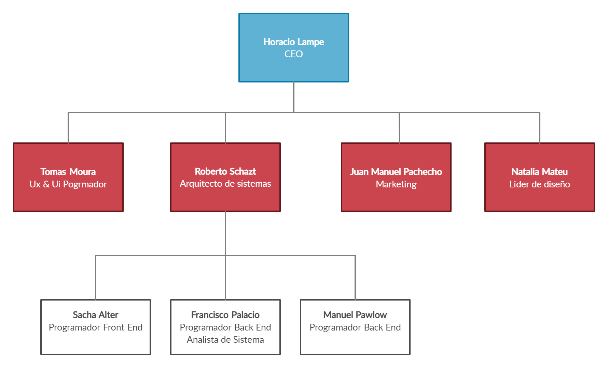
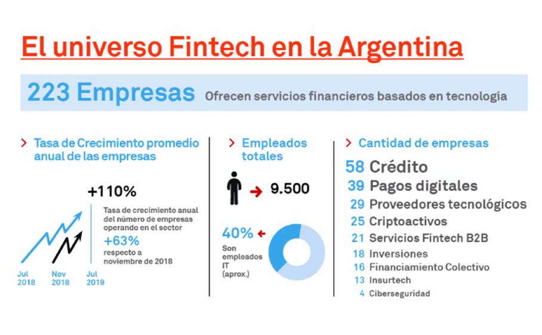

3 Presentación de la organización.
3.1 Action Fintech
3.1.1 Reseña histórica
En 2003 surge el grupo INNOVACTION, liderados por Horacio Lampe, el cual ofrece portales e Intranets basadas en DNN - DotNetNuke. Con el correr de los años logro posicionarse en el mercado y lograr acuerdos con empresas nacionales e internacionales como Swiss Medical, enap Sipetrol, Banelco, DirecTv, entre otras.
Al observar el fuerte crecimiento en el mercado fintech y con el objetivo de expandir INNOVACTION en el año 2017, Horacio Lampe, actual CEO, da inicio a Action Fintech SAS, con el objetivo de disminuir la brecha entre personas bancarizadas y no bancarizadas. Ubicada en Martínez, Buenos Aires, tiene como actividad principal transformar las financieras tradicionales o startups en Fintechs Online.
Actualmente la empresa ya cuenta con más de 5 fintechs online, y un equipo de trabajo que crece constantemente en que busca de brindar un mejor servicio para poder alcanzar el objetivo de ser líderes en el mercado.
3.1.2 Vision
Ser la primera empresa digital en la Nube que facilita una plataforma SaaS a las compañías financieras y los bancos para la mejor evaluación y onboarding cuyo objetivo es aumentar la inclusión financiera significativamente de las personas de Latinoamérica.
3.1.3 Valores
Trabajo en equipo, como forma de alcanzar logros a través del esfuerzo combinado de cada individuo.
Proactividad, visto como la forma de tomar iniciativa para generar cambios.
Innovación, como clave del crecimiento sostenido de la empresa.
Prudencia, entendida básicamente como el principio de precaución en la asunción del riesgo.
3.1.4 Actvidad
Action Fintech ofrece el software como servicio (SaaS) el cual permite:
El sistema de e-Lending es totalmente automático, permite el otorgamiento de los préstamos vía la identificación, validación y calificación del crédito a través de la Web. El cobro es por débito de cuenta.
Podrá otorgar préstamos sin la intervención de personal. Sus clientes podrán acceder a su servicios de manera ágil las 24 horas del día los 365 días del año desde cualquier lugar del país.
El proceso de solicitud y otorgamiento del crédito es 100% online. El usuario carga los datos, el sistema los valida y en base las reglas de negocio preestablecidas se otorga el préstamo vía transferencia bancaria por CBU.
Diseñamos una plataforma exclusiva centrada en la experiencia del usuario UX/UI. Le brindamos soporte técnico las 24 horas para dar rápida solución a sus inconvenientes.
Contamos con un Motor de Inteligencia Artificial y Big Data para toma de decisiones en tiempo real. Se reduce el riesgo, simplifica el proceso y facilita la tarea de control y seguimiento.
Planificación de estrategias de comunicación y posicionamiento de marca. Implementación, seguimiento y optimización de campañas publicitarias en Google Ads y Facebook Ads.
3.1.5 Organigrama

3.1.7 Análisis del sector de la empresa
Segun la Camara Fitnech, Argentina es cuna de grandes emprendimientos y motor para el desarrollo de la innovación, y se presenta como un escenario propicio para el crecimiento de Fintech que apunten a diseñar y brindar servicios de alcance regional.(Informe-Ecosistema-Fintech-Argentino,p.16)
Fuente: https://camarafintech.com.ar/wp-content/uploads/2019/06/Informe-Ecosistema-Fintech-Argentino.pdf